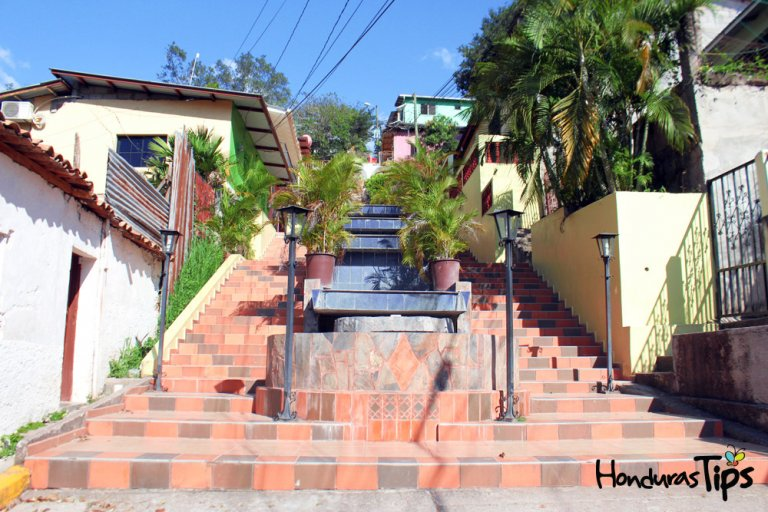

Santa Bárbara

La ciudad cabecera del departamento occidental se llama de igual forma,
Santa Bárbara, esta ciudad es una concentración de la industria
comercial y hotelera de la región. Siempre luce apacible, pero es la
parada obligada para visitar muchos de los municipios del departamento
de Santa Bárbara. Si planea visitar este encantador destino, le
recomendamos hacerlo entre el 1 y 8 de diciembre, que es la feria patronal
del departamento, aquí es cuando la ciudad viste sus mejores galas.